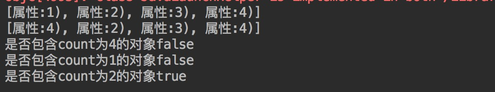
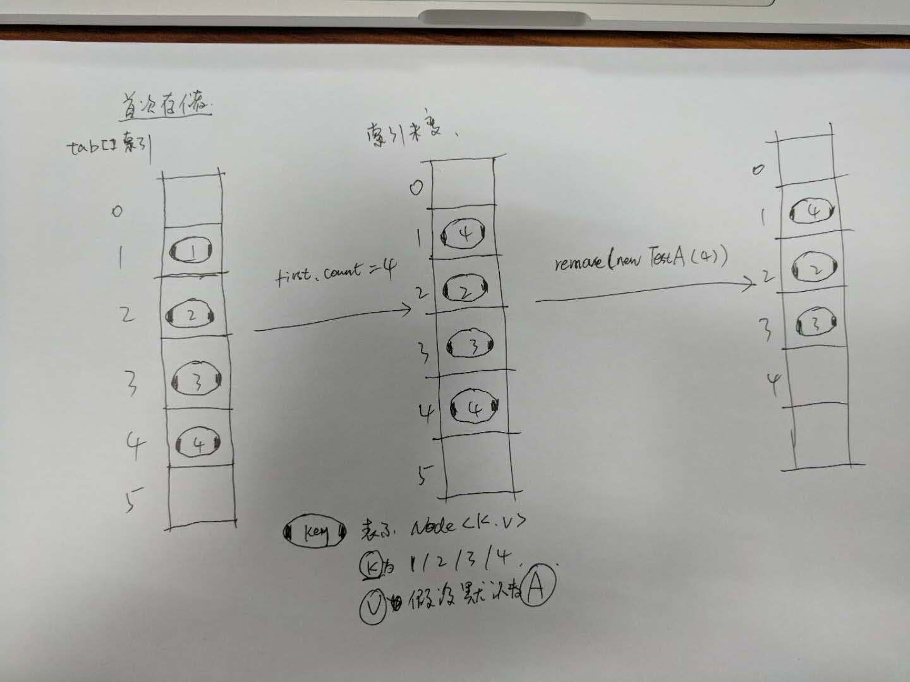
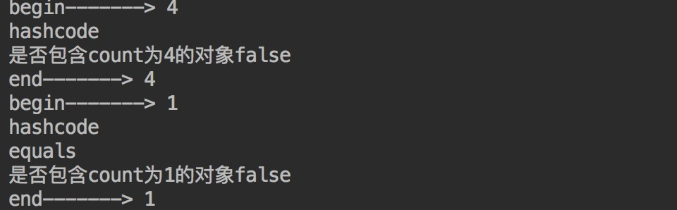

背景
我们都知道HashMap和HashSet的基本特性，这点我就不赘述了。关于使用HashSet所需要注意的一个有意思的场景相信大家也都知道，就是避免对存储对象的修改，放出出现读取异常。言语总是无法表达清晰，代码伺候：
1.首先我们定义一个存储的目标对象 为了我们方便我们接下来的猜想我们要重写hashCode和equals方法
1 | public class TestBean { |
2.接下来就是测试代码，也非常简单1
2
3
4
5
6
7
8
9
10
11
12
13
14
15
16
17
18
19
20
21
22public class TestHashSet2 {
public static void main(String[] args)
{
HashSet<TestBean> hs = new HashSet<TestBean>();
hs.add(new TestBean(1));
hs.add(new TestBean(2));
hs.add(new TestBean(3));
hs.add(new TestBean(4));
System.out.println(hs);
//取出第一个元素
Iterator<TestBean> it = hs.iterator();
TestBean first = (TestBean)it.next(); //first指向集合的第一个元素
//修改第一个元素的count属性赋值 first.count = 4;
//再次输出HashSet
System.out.println(hs);
hs.remove(new TestBean(4));
System.out.println("是否包含count为4的对象" + hs.contains(new TestBean(4)));
System.out.println("是否包含count为1的对象" + hs.contains(new TestBean(1)));
System.out.println("是否包含count为2的对象" + hs.contains(new TestBean(2)));
}
}
运行结果如下：

有些人可能觉得结果很神奇，有些人可能早就猜到了结果，但是原因是为什么呢？网上搜了一下也没找到想要的答案，有些人一看到new就说是堆栈、引用等等造成的，但并不能说出个所以然来，而我并不这么认为，于是开始了我的猜想认证之旅，各位乘客请系好安全带，我要开车了～
我们先进去进入HashSet的contains()方法中看看都干了写啥：
1 | /** |
这里调用了HashMap的containsKey方法，我们都知道HashSet本来就是HashMap实现的，所以借这个机会正好复看一下HashMap的源码我们进入containsKey(o)方法：1
2
3
4
5
6
7
8
9
10
11
12
/**
* Returns <tt>true</tt> if this map contains a mapping for the
* specified key.
*
* @param key The key whose presence in this map is to be tested
* @return <tt>true</tt> if this map contains a mapping for the specified
* key.
*/
public boolean containsKey(Object key) {
return getNode(hash(key), key) != null;
}
继续
1 | /** |
源码就是源码，一看就头大，因为有时候为了源码的简洁就会导致代码的阅读性变低，习惯就好哈哈，而且JDK 8.0的HashMap的源码还是有一些改动的。详细介绍跳转—Java 8系列之重新认识HashMap。我就大概简单介绍下：
HashMap的实现是数组加链表的数据结构，我们先通过一张图来看一下HashMap的结构

结合图我们看一下首先Node<K,V>[] tab表示的是一个Node<K,V类型的数组，就是图中的数组。tab是的HashMap中一个非常重要的字段，叫做哈希桶数组。我们注意到代码中有个TreeNode类，其实就是图中的红黑树结构，感兴趣的同学可以深入了解一下。所以上面的代码其实简单来讲就是
对HashMap存储的数据结构的遍历
当时主要存在的两个疑点是
tab[(n - 1) & hash]。这是个什么意思呢？Node<K,V>又是个啥呢？
要弄明白第一个问题我们要先回到containsKey()方法看看，我们发现这里调用了hash(key)，我们进入hash方法看一下：
1 | static final int hash(Object key) { |
代码十分简单，其实就是对传入的key的哈希值进行二次运算, 要不咋说自己菜呢，看到这里依然是懵逼状态，然后呢？别着急下面这张图你看完绝对就明白了

首先HashMap中的哈希桶数组也就是tab总是一个合数，h& (length-1)运算等价于对length取模，也就是h%length，但是&比%具有更高的效率。就是比如：1
2
3
4
5
6
7
8
9
10
11
12
13length = 16
h = 1
h& (length-1) = 1;
h = 2
h& (length-1) = 2;
h = 17
h& (length-1) = 1;
h = 18
h& (length-1) = 2;
是不是非常清晰了～我们日常的使用length的值都不会太大，这样的话就能保证考虑到高低Bit都参与到Hash的计算中，大大提升效率。
那好我们接着来说说这个Node<K, V>是啥～1
2
3
4
5
6
7
8
9
10
11
12
13
14
15
16
17
18
19
20
21
22
23
24
25
26
27
28
29
30
31
32
33
34
35
36
37
38
39
40
41
42
43
44
/**
* Basic hash bin node, used for most entries. (See below for
* TreeNode subclass, and in LinkedHashMap for its Entry subclass.)
*/
static class Node<K,V> implements Map.Entry<K,V> {
final int hash;
final K key;
V value;
Node<K,V> next;
Node(int hash, K key, V value, Node<K,V> next) {
this.hash = hash;
this.key = key;
this.value = value;
this.next = next;
}
public final K getKey() { return key; }
public final V getValue() { return value; }
public final String toString() { return key + "=" + value; }
public final int hashCode() {
return Objects.hashCode(key) ^ Objects.hashCode(value);
}
public final V setValue(V newValue) {
V oldValue = value;
value = newValue;
return oldValue;
}
public final boolean equals(Object o) {
if (o == this)
return true;
if (o instanceof Map.Entry) {
Map.Entry<?,?> e = (Map.Entry<?,?>)o;
if (Objects.equals(key, e.getKey()) &&
Objects.equals(value, e.getValue()))
return true;
}
return false;
}
}
Node是HashMap的一个内部类，实现了Map.Entry接口，也就是HashMap中用于存储键值对的基础
单元了。
说了这么多，有些人是不是感觉有点跑偏了，其实不然，map的几个重要方法也就是对这些数据结构的操作，当然还有其他的一些负载因子参数啥的，有兴趣的可深入了解。接下来就是我的推断时间了：还记得上面的cotains方法最后到HashMap中的getNode方法么，淡忘了的可以返回去看一下，还有我们的demo代码：getNode方法的遍历顺序，是这样的，首先通过首先通过传入的int hash值去寻找tab中对应的索引，然后遍历对比，顺序是，先比较hashCode，然后再去对比equals。可是我们复写了hashcode 啊。所以我通过几张图来讲解一下我的猜想：

图画的一般哈哈
为方便我们讲解我们假设存储的结构是如图所示的，其实真是情况下是不会这么规则排列的，而且还会存在哈希值冲撞等等的情况。我们知道HashSet底层是通过利用hashmap key唯一性的特点将object作为key，然后传入一个默认值的value实现的。我们假设第一次初始化存储之后以1/2/3/4作为key的Node分别存储在索引为1/2/3/4的位置上，修改第一项为4以及删除操作之后数据结构变化如图所示。所以当我们去查询的时候1
2
3
4
5
6
7
8
9
10System.out.println("是否包含count为4的对象" + hs.contains(new TestBean(4)));
分析步骤如下
1.通过对哈希值的计算得到索引然后找到tab[4]的位置上
2.发现链表为null所以直接返回false
System.out.println("是否包含count为1的对象" + hs.contains(new TestBean(1)));
分析步骤如下
1.通过对哈希值的计算得到索引然后找到tab[1]的位置上
2.发现链表为不为null，开始遍历。
3.开始比较hashCode相同，调用equals，然后返回false
以上就是我的猜想了，但是有了猜想，咱就得想办法去佐证一下，不然就真的是瞎想了，我是这样去认证的：修改TestA的hashCode()和equals()方法，添加打印消息：1
2
3
4
5
6
7
8
9
10
11
12
13
14
15
16
17
18public boolean equals(Object obj)
{
if (obj instanceof TestBean)
{
TestBean r = (TestBean)obj;
System.out.println("equals"); //添加打印信息
if (r.count == this.count)
{
return true;
}
}
return false;
}
public int hashCode()
{
System.out.println("hashcode"); //添加打印信息
return this.count;
}
修改demo如下：
1 | System.out.println("begin-------> 4"); |
打印结果如下：

至此，与猜想完全吻合～
以上内容皆属于个人猜想，如有错误，欢迎拍砖。
参考文章：
Java 8系列之重新认识HashMap
Java HashMap工作原理及实现